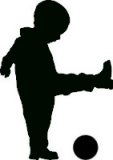

 Fall Theme: Communicating
Now that your little one has begun to walk around and make words out of those first sounds he was making a few short months ago, one of the favorite things to do is mimic everything you say and do. Have you ever watched him pick up a remote and put it to his shoulder and talk to it like a cell phone? To learn to communicate with your toddler it's crucial to get down on their level and play with them. Animal sounds, gadget sounds, movement sounds, angry sounds, happy sounds, they are all forms of communication and important to making a point. If there is danger, a sharp tone... Winter Theme: